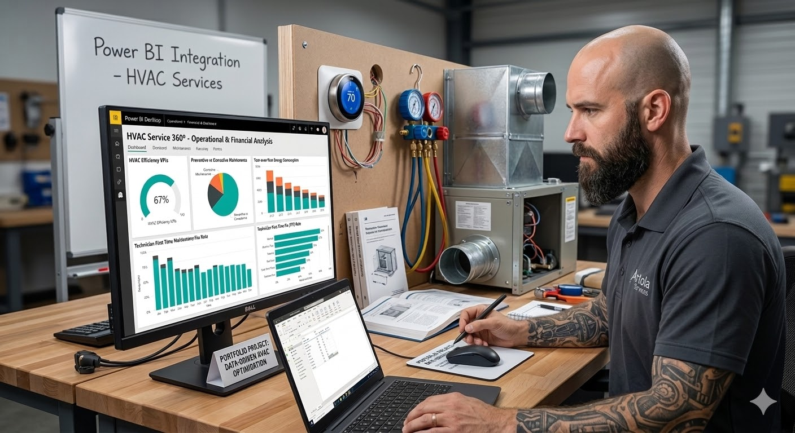
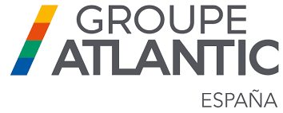
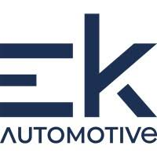

Sobre Mí
Especialista en gestión de posventa para los mercados de España y Portugal, fusiono mi experiencia operativa con un fuerte interés por la Inteligencia Artificial y el Análisis de Datos para optimizar procesos. Me desenvuelvo con naturalidad en entornos de trabajo en equipo, facilitando la comunicación transversal entre departamentos para impulsar soluciones eficientes.
Hitos y Logros
Reducción del gasto acumulado anual en la zona asignada, logrando un desacople positivo entre la bajada de actividad (-8,2%) y el ahorro total conseguido.
Mejora en la eficiencia económica del servicio (Coste Medio por Aviso), optimizando la gestión de recursos por intervención técnica.
Récord de reducción de costes en periodos de alta exigencia (Noviembre) mediante la implementación de controles estrictos y auditoría.
"Para mejorar la eficiencia, hay que entender qué nos dicen los números y, sobre todo, saber traducirlos en soluciones reales. No se trata solo de ver dónde sube el gasto, sino de identificar si el problema es un cuello de botella o un proceso mal diseñado que está mermando nuestros resultados."
Portafolio de Proyectos

Sistema integral de BI diseñado para auditar y optimizar la gestión de 2.000 órdenes de trabajo anuales. Integra un modelo de datos avanzado para analizar la evolución del Gasto en Garantías (vs Año Anterior), la productividad técnica mediante la Tasa de First Time Fix (FTF) y la saturación operativa por zonas.
Ver Proyecto Completo
Aplicación web interactiva desarrollada para simular y calcular la eficiencia energética, el ahorro de costes y el retorno de inversión (ROI) en la transición a sistemas de climatización por aerotermia. Diseñada como una herramienta ágil para facilitar la consultoría técnica y operativa.
Probar CalculadoraExperiencia Laboral

- Coordinación de Red SAT (CATO's): Gestión integral de la red de asistencia técnica en Andorra, Cataluña, Valencia, Murcia, Baleares y Portugal.
- Optimización de Procesos: Diseño de estrategias operativas para mejorar la atención técnica y flujos internos.
- Análisis de Datos: Elaboración de dashboards dinámicos para seguimiento de KPIs y costes operativos.
- Auditoría y Calidad: Realización de auditorías para asegurar cumplimiento de estándares de calidad.
- Formación: Ejecución de planes de formación operativa sobre plataformas digitales en España y Portugal.
- Impulso de acciones comerciales y soporte en la venta de servicios postventa.

- Gestión de Garantías: Análisis riguroso bajo protocolos del fabricante para asegurar criterios homogéneos.
- Logística de Recambios: Gestión de stock, trazabilidad (QlikView) y logística inversa.
- Liderazgo de Equipo: Coordinación de 8 personas, gestión de incidencias y control de productividad.
- Reporting: Generación de informes de resultados para responsables de área y clientes clave.
Habilidades
Habilidades Técnicas (Hard Skills)
- Análisis de Datos y Reporting (Power BI, Excel).
- Automatización (Power Automate).
- Gestión de Bases de Datos.
- Gestión de Logística y Recambios.
- Digitalización de Procesos SAT.
Habilidades Blandas (Soft Skills)
- Gestión y Resolución de Conflictos.
- Liderazgo y Coordinación Operativa.
- Toma de Decisiones.
- Capacidad Formativa.
- Comunicación y Colaboración Transversal.
Idiomas
 Español
Nativo
Español
Nativo
 Portugués
Competencia Profesional
Portugués
Competencia Profesional
 Inglés
Competencia Técnica
Inglés
Competencia Técnica
Certificaciones y Formación
Historial Académico
Lo que dicen los clientes (Google Reviews)
"Esta reseña va para David Artola, grácias por tu gestión, por tu ayuda, tu implicación y amabilidad, servicio post venta de 10 un gran profesional."
"Hoy tuve el placer de ser atendido por David... Tenía varias preguntas sobre los diferentes planes de mantenimiento... Su interés personal y su paciencia me confirmaron que había tomado la decisión correcta."
"Gostaria de agradecer e elogiar o David pelo excelente atendimento! Ele está siempre disponible para tirar todas as minhas dúvidas... É muito atencioso, prestativo e demonstra grande conhecimento técnico."
"Recentemente solicitei ajuda após venda e fui atendido pelo David. Super prestável e feedback imediato. Recomendo."
"Agradezco a David Artola como responsable, la comprensión y su disposición a resolver el problema. Una buena marca es la que sigue tratando bien al cliente después de la instalación."
(Desliza para ver más reseñas)